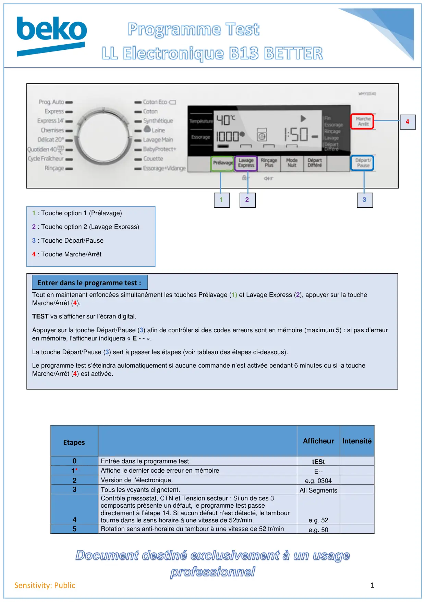
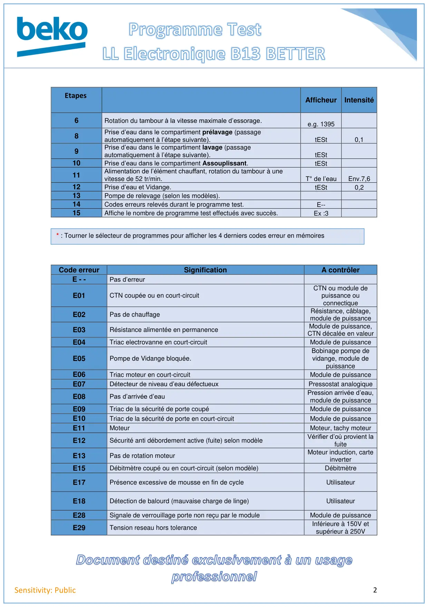

Prog Test lave linge Electronique B13 BETTER

1Sensitivity: PublicAfficheurIntensité0Entrée dans le programme test.tESt1*Affiche le dernier code erreur en mémoireE--2Version de l’électronique.e.g. 03043Tous les voyants clignotent.All Segments4Contrôle pressostat, CTN et Tension secteur : Si un de ces 3composants présente un défaut, le programme test passedirectement à l’étape 14. Si aucun défaut n’est détecté, le tambourtourne dans le sens horaire à une vitesse de 52tr/min.e.g. 525Rotation sens anti-horaire du tambour à une vitesse de 52 tr/mine.g. 5014321 : Touche option 1 (Prélavage)2 : Touche option 2 (Lavage Express)3 : Touche Départ/Pause4 : Touche Marche/ArrêtTout en maintenant enfoncées simultanément les touches Prélavage (1) et Lavage Express (2), appuyer sur la toucheMarche/Arrêt (4).TEST va s’afficher sur l’écran digital.Appuyer sur la touche Départ/Pause (3) afin de contrôler si des codes erreurs sont en mémoire (maximum 5) : si pas d’erreuren mémoire, l’afficheur indiquera « E - - ».La touche Départ/Pause (3) sert à passer les étapes (voir tableau des étapes ci-dessous).Le programme test s’éteindra automatiquement si aucune commande n’est activée pendant 6 minutes ou si la toucheMarche/Arrêt (4) est activée.Entrer dans le programme test :Etapes
1 / 2
2Sensitivity: PublicCode erreurSignificationA contrôlerE - -Pas d’erreurE01CTN coupée ou en court-circuitCTN ou module depuissance ouconnectiqueE02Pas de chauffageRésistance, câblage,module de puissanceE03Résistance alimentée en permanenceModule de puissance,CTN décalée en valeurE04Triac electrovanne en court-circuitModule de puissanceE05Pompe de Vidange bloquée.Bobinage pompe devidange, module depuissanceE06Triac moteur en court-circuitModule de puissanceE07Détecteur de niveau d’eau défectueuxPressostat analogiqueE08Pas d’arrivée d’eauPression arrivée d’eau,module de puissanceE09Triac de la sécurité de porte coupéModule de puissanceE10Triac de la sécurité de porte en court-circuitModule de puissanceE11MoteurMoteur, tachy moteurE12Sécurité anti débordement active (fuite) selon modèleVérifier d’où provient lafuiteE13Pas de rotation moteurMoteur induction, carteinverterE15Débitmètre coupé ou en court-circuit (selon modèle)DébitmètreE17Présence excessive de mousse en fin de cycleUtilisateurE18Détection de balourd (mauvaise charge de linge)UtilisateurE28Signale de verrouillage porte non reçu par le moduleModule de puissanceE29Tension reseau hors toleranceInférieure à 150V etsupérieur à 250VAfficheur Intensité6Rotation du tambour à la vitesse maximale d’essorage.e.g. 13958Prise d’eau dans le compartiment prélavage (passageautomatiquement à l’étape suivante).tESt0,19Prise d’eau dans le compartiment lavage (passageautomatiquement à l’étape suivante).tESt10Prise d’eau dans le compartiment Assouplissant.tESt11Alimentation de l’élément chauffant, rotation du tambour à unevitesse de 52 tr/min.T° de l’eauEnv.7,612Prise d’eau et Vidange.tESt0,213Pompe de relevage (selon les modèles).14Codes erreurs relevés durant le programme test.E--15Affiche le nombre de programme test effectués avec succès.Ex :3* : Tourner le sélecteur de programmes pour afficher les 4 derniers codes erreur en mémoiresEtapes
2 / 2